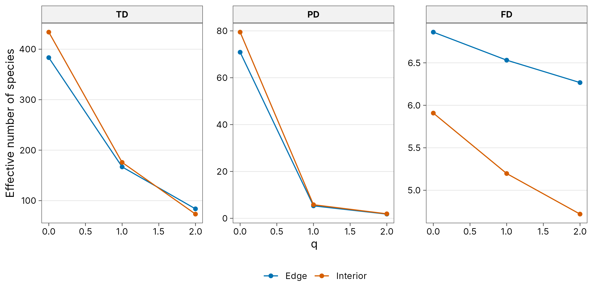
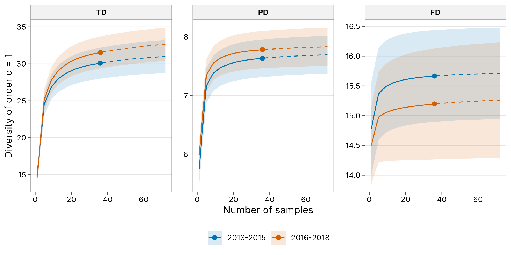

tidydiversity measures three dimensions of diversity with the same Hill number framework:
- Taxonomic diversity (TD) treats every species as equally distinct.
- Phylogenetic diversity (PD) weights species by the branch lengths of a phylogeny (Chao, Chiu and Jost 2010, 2014).
- Functional diversity (FD) weights species by their trait distances, using the attribute-diversity approach of Chao et al. (2019).
Each is an effective number of species of order q, so
the three can be plotted on the same axis. Every dimension works with
abundance data (individuals) and with incidence data (detections in
sampling units such as traps, baits or survey days), with bootstrap
standard errors and confidence intervals throughout. The estimators
reproduce iNEXT.3D and this
is checked in the package test suite.
Data
The example uses the Brazilian rainforest tree data shipped with
iNEXT.3D: abundances at two sites (Edge and
Interior), a time-calibrated phylogeny and a Gower distance
matrix of traits.
library(tidydiversity)
library(dplyr)
library(ggplot2)
data(list = c(
"Brazil_rainforest_abun_data", "Brazil_rainforest_phylo_tree",
"Brazil_rainforest_distance_matrix"
), package = "iNEXT.3D")
wide <- Brazil_rainforest_abun_data
brazil <- tibble(
site = rep(colnames(wide), each = nrow(wide)),
species = rep(rownames(wide), ncol(wide)),
n = unlist(wide, use.names = FALSE)
) |>
filter(n > 0)
tree <- Brazil_rainforest_phylo_tree
traits <- as.matrix(Brazil_rainforest_distance_matrix)Observed and asymptotic diversity
set.seed(1)
div_estimate(brazil, abundance = n, nboot = 50)
#> # A tibble: 6 × 7
#> site q observed estimate se lower upper
#> <chr> <dbl> <dbl> <dbl> <dbl> <dbl> <dbl>
#> 1 Edge 0 319 445. 21.3 410. 494.
#> 2 Edge 1 155. 178. 5.81 167. 189.
#> 3 Edge 2 82.0 85.9 4.42 82.0 94.6
#> 4 Interior 0 356 514. 30.8 464. 586.
#> 5 Interior 1 164. 187. 6.56 174. 200.
#> 6 Interior 2 72.2 74.7 4.22 72.2 83.0reftime defaults to the age of the root of the tree
pruned to the observed species. With pd_unit = "mean" (the
default) PD is divided by reftime, giving the effective
number of lineages.
div_estimate(brazil, abundance = n, type = "PD", tree = tree, nboot = 50)
#> # A tibble: 6 × 9
#> site q observed estimate se lower upper type reftime
#> <chr> <dbl> <dbl> <dbl> <dbl> <dbl> <dbl> <chr> <dbl>
#> 1 Edge 0 61.3 80.0 4.50 73.1 91.1 PD 400
#> 2 Edge 1 5.25 5.37 0.0889 5.25 5.55 PD 400
#> 3 Edge 2 1.80 1.80 0.0168 1.80 1.83 PD 400
#> 4 Interior 0 69.3 86.4 4.42 79.7 97.4 PD 400
#> 5 Interior 1 5.72 5.85 0.0752 5.72 6.00 PD 400
#> 6 Interior 2 1.91 1.91 0.0251 1.91 1.96 PD 400tau defaults to the mean distance between two
individuals in the pooled data. Species closer than tau
count as functionally identical.
div_estimate(brazil, abundance = n, type = "FD", distance = traits, nboot = 50)
#> # A tibble: 6 × 9
#> site q observed estimate se lower upper type tau
#> <chr> <dbl> <dbl> <dbl> <dbl> <dbl> <dbl> <chr> <dbl>
#> 1 Edge 0 6.86 6.86 0.125 6.86 7.45 FD 0.353
#> 2 Edge 1 6.52 6.54 0.106 6.52 6.74 FD 0.353
#> 3 Edge 2 6.26 6.28 0.101 6.26 6.47 FD 0.353
#> 4 Interior 0 5.91 5.91 0.0842 5.91 6.07 FD 0.353
#> 5 Interior 1 5.19 5.20 0.0863 5.19 5.37 FD 0.353
#> 6 Interior 2 4.72 4.72 0.0870 4.72 4.89 FD 0.353tau = "auc" integrates FD over every threshold from 0 to
1, so no single threshold has to be chosen.
div_estimate(brazil,
abundance = n, type = "FD", distance = traits, tau = "auc",
nboot = 20
)
#> # A tibble: 6 × 9
#> site q observed estimate se lower upper type tau
#> <chr> <dbl> <dbl> <dbl> <dbl> <dbl> <dbl> <chr> <dbl>
#> 1 Edge 0 17.9 19.0 5.49 17.9 55.5 FD NA
#> 2 Edge 1 11.8 12.1 0.400 11.8 12.8 FD NA
#> 3 Edge 2 9.14 9.25 0.297 9.14 9.84 FD NA
#> 4 Interior 0 17.2 18.2 7.82 17.2 70.9 FD NA
#> 5 Interior 1 9.72 9.94 0.318 9.72 10.6 FD NA
#> 6 Interior 2 7.01 7.07 0.150 7.01 7.36 FD NAStandardised comparison
type = "all" (or several types, such as
c("TD", "PD")) analyses the dimensions together and returns
one tibble with a type column.
Standardise every dimension to the same sample coverage. Coverage is computed from the species counts, as in iNEXT.3D, and the PD and FD values are then evaluated at the matching sample size.
std <- div_standardise(brazil,
abundance = n, type = "all", tree = tree, distance = traits,
coverage = 0.97, nboot = 0
)
std |> select(type, site, q, m, coverage, diversity)
#> # A tibble: 18 × 6
#> type site q m coverage diversity
#> <fct> <chr> <dbl> <dbl> <dbl> <dbl>
#> 1 TD Edge 0 3262. 0.970 383.
#> 2 TD Edge 1 3262. 0.970 167.
#> 3 TD Edge 2 3262. 0.970 83.7
#> 4 TD Interior 0 3883. 0.970 434.
#> 5 TD Interior 1 3883. 0.970 176.
#> 6 TD Interior 2 3883. 0.970 73.3
#> 7 PD Edge 0 3262. 0.970 70.9
#> 8 PD Edge 1 3262. 0.970 5.31
#> 9 PD Edge 2 3262. 0.970 1.80
#> 10 PD Interior 0 3883. 0.970 79.5
#> 11 PD Interior 1 3883. 0.970 5.80
#> 12 PD Interior 2 3883. 0.970 1.91
#> 13 FD Edge 0 3262. 0.970 6.86
#> 14 FD Edge 1 3262. 0.970 6.53
#> 15 FD Edge 2 3262. 0.970 6.27
#> 16 FD Interior 0 3883. 0.970 5.91
#> 17 FD Interior 1 3883. 0.970 5.20
#> 18 FD Interior 2 3883. 0.970 4.72
ggplot(std, aes(q, diversity, colour = site)) +
geom_line() +
geom_point() +
facet_wrap(~type, scales = "free_y") +
scale_colour_tidydiversity() +
labs(y = "Effective number of species", colour = NULL) +
theme_tidydiversity()
Incidence data
Many surveys record which species were detected in each sampling unit
rather than how many individuals were counted. Give the unit column with
unit; each site is then described by the number of units in
which each species was found and the number of units sampled, and every
estimate is incidence-based (Chao et al. 2014). The same
type, tree and distance arguments
give incidence-based PD and FD. For PD a branch is present in a unit
when any species below it was detected there.
The example uses the fish survey shipped with iNEXT.3D: monthly samples in two periods (2013-2015 and 2016-2018, 36 samples each) with a phylogeny and a trait distance matrix. The results reproduce iNEXT.3D, and this is checked in the test suite.
data(list = c(
"Fish_incidence_data", "Fish_phylo_tree", "Fish_distance_matrix"
), package = "iNEXT.3D")
fish <- bind_rows(lapply(names(Fish_incidence_data), function(period) {
m <- Fish_incidence_data[[period]]
hit <- which(m > 0, arr.ind = TRUE)
tibble(
site = period, species = rownames(m)[hit[, 1]],
sample = colnames(m)[hit[, 2]], n_samples = ncol(m)
)
}))
fish
#> # A tibble: 1,054 × 4
#> site species sample n_samples
#> <chr> <chr> <chr> <int>
#> 1 2013-2015 Ciliata_mustela 17/01/2013 36
#> 2 2013-2015 Clupea_harengus 17/01/2013 36
#> 3 2013-2015 Dicentrarchus_labrax 17/01/2013 36
#> 4 2013-2015 Gadus_morhua 17/01/2013 36
#> 5 2013-2015 Limanda_limanda 17/01/2013 36
#> 6 2013-2015 Liparis_liparis 17/01/2013 36
#> 7 2013-2015 Chelon_ramada 17/01/2013 36
#> 8 2013-2015 Merlangius_merlangus 17/01/2013 36
#> 9 2013-2015 Platichthys_flesus 17/01/2013 36
#> 10 2013-2015 Pomatoschistus_minutus 17/01/2013 36
#> # ℹ 1,044 more rows
set.seed(1)
fish_curves <- div_rarefy(fish,
unit = sample, n_units = n_samples, q = 1, type = "all",
tree = Fish_phylo_tree, distance = as.matrix(Fish_distance_matrix),
knots = 20, nboot = 30
)
ggplot(fish_curves, aes(m, diversity, colour = site, fill = site)) +
geom_ribbon(aes(ymin = lower, ymax = upper), alpha = 0.15, colour = NA) +
geom_line(aes(linetype = method == "extrapolation")) +
geom_point(data = filter(fish_curves, method == "observed"), size = 2) +
facet_wrap(~type, scales = "free_y") +
scale_colour_tidydiversity() +
scale_fill_tidydiversity() +
scale_linetype_manual(values = c("solid", "dashed"), guide = "none") +
labs(
x = "Number of samples", y = "Diversity of order q = 1",
colour = NULL, fill = NULL
) +
theme_tidydiversity()
The ant baits in png_ants are incidence data too: each
bait is a sampling unit, and baits gives the 60 baits set
at every elevation and season, including those no ant visited.
Incidence-based (Chao2) richness:
set.seed(1)
div_estimate(png_ants,
unit = bait, n_units = baits, q = 0, .by = season, nboot = 50
)
#> # A tibble: 10 × 8
#> season site q observed estimate se lower upper
#> <chr> <chr> <dbl> <dbl> <dbl> <dbl> <dbl> <dbl>
#> 1 dry MW0200 0 16 18.5 7.75 16.1 66.9
#> 2 wet MW0200 0 21 32.9 16.8 22.5 113.
#> 3 dry MW0700 0 15 85.8 40.2 40.1 214.
#> 4 wet MW0700 0 28 75.4 49.9 36.7 285.
#> 5 dry MW1200 0 13 21.0 12.5 13.9 83.5
#> 6 wet MW1200 0 20 33.3 13.6 22.5 89.6
#> 7 dry MW1700 0 5 5.25 1.77 5.00 17.2
#> 8 wet MW1700 0 10 18.8 7.38 12.1 46.8
#> 9 dry MW2200 0 6 10.4 4.60 6.83 29.7
#> 10 wet MW2200 0 5 6.97 2.92 5.24 21.3References
Chao, A., Chiu, C.-H. and Jost, L. (2014). Unifying species diversity, phylogenetic diversity, functional diversity, and related similarity and differentiation measures through Hill numbers. Annual Review of Ecology, Evolution, and Systematics, 45, 297-324. https://doi.org/10.1146/annurev-ecolsys-120213-091540
Chao, A., Chiu, C.-H., Villeger, S. et al. (2019). An attribute-diversity approach to functional diversity, functional beta diversity, and related (dis)similarity measures. Ecological Monographs, 89, e01343. https://doi.org/10.1002/ecm.1343
Chao, A., Gotelli, N. J., Hsieh, T. C., Sander, E. L., Ma, K. H., Colwell, R. K. and Ellison, A. M. (2014). Rarefaction and extrapolation with Hill numbers: a framework for sampling and estimation in species diversity studies. Ecological Monographs, 84, 45-67. https://doi.org/10.1890/13-0133.1